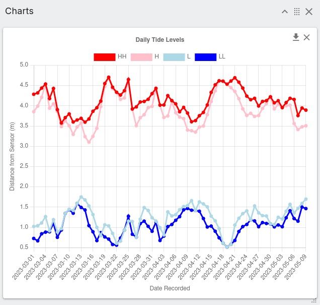
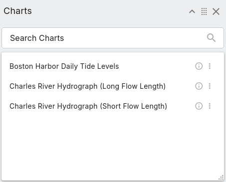
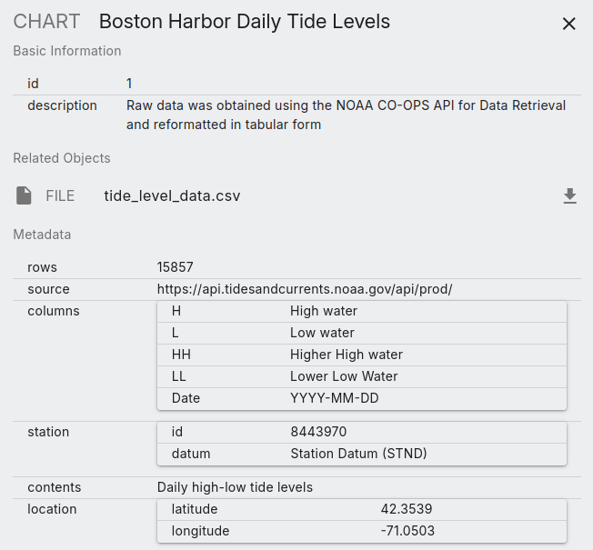
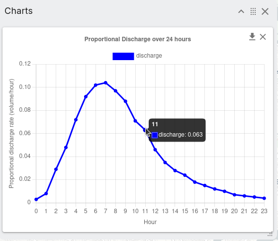
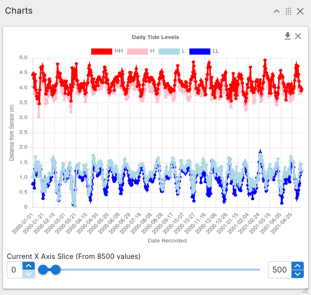
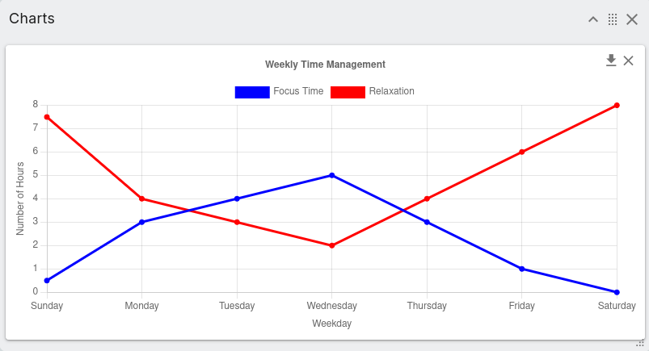

Introduction
While GeoDatalytics is primarily focused on visualizing geospatial data on a map, the Charts panel also allows you to visualize tabular data with line charts. Chart data can be created during an Analytics task or uploaded via the API. Currently, chart creation via the user interface is not yet supported. The Charts panel is a read-only view of charts in the current project.

In its default state, the Charts panel shows a list of all Chart objects included in the current project. Each item shows the chart name, followed by two icons. The information icon shows the chart’s description when the mouse hovers over it. The vertical three dots icon, when clicked, will open the details dialog for that chart.

The details dialog for any given chart will show the name, id, description, metadata, and related objects like files. If there are any related files, you can download them from this dialog.

Clicking on any chart in the Charts panel will display an interactive visualization of the chart data. You can hover over any data point to see its value. In the top right corner of the chart display, there are two icons. The download icon will initiate a download of the chart data, formatted as JSON. The X button will close the chart visualization and return to the list of charts.
Note that if the chart was converted from a CSV, the download button in the top right will not download the original CSV file; it will download a version of the data formatted for visualization. The original CSV can only be downloaded from the details dialog.

Note that some charts are more dense than others, and may require that you resize the Charts panel to see the data properly, since the Charts panel is relatively small by default. To learn more about resizing panels, see the Panel Controls documentation.
For chart data that is particularly dense, with more than 500 labels along the x-axis, only the first 500 labels will be shown by default and a range slider will appear below the chart to control the current x-axis window.

Creating New Charts via API
While creating a chart is not yet supported in the user interface, you can create new charts via the API. The API offers two modes of chart creation: direct data entry and file conversion. Direct data entry is recommended, as it is the simpler approach. File conversion is a more advanced approach with more steps.
The following code example demonstrates chart creation with direct data entry:
import json
import requests
from datetime import datetime
with requests.Session() as session:
token = session.post(f'{base_url}/api/v1/token/', dict(
username=username,
password=password,
)).json().get('token')
session.headers.update({
'Authorization': f'Token {token}',
'Accept': 'application/json',
})
my_new_chart = dict(
name='Example Chart',
description='Line chart with two datasets uploaded via API',
project=project_id,
metadata=json.dumps(dict(
uploaded=datetime.now().strftime('YYYY-mm-dd HH:MM:SS'),
nested=dict(
example=True,
),
)),
chart_data=json.dumps(dict(
# Pass x-axis labels
labels=['Sunday', 'Monday', 'Tuesday',
'Wednesday', 'Thursday', 'Friday', 'Saturday'],
# Pass one or more datasets containing y-values
datasets=[
# One blue line for "Focus Time"
dict(
data=[0.5, 3, 4, 5, 3, 1, 0],
label='Focus Time',
borderColor='#0000ff',
backgroundColor='#0000ff',
),
# One red line for "Relaxation"
dict(
data=[7.5, 4, 3, 2, 4, 6, 8],
label='Relaxation',
borderColor='#ff0000',
backgroundColor='#ff0000',
)
],
)),
chart_options=json.dumps(dict(
x_title='Weekday',
y_title='Number of Hours',
chart_title='Weekly Time Management',
))
)
r = session.post(f'{base_url}/api/v1/charts/', my_new_chart)
print(r.json())
The screenshot below shows the resulting chart object in the Charts panel.

The next example shows chart creation with file conversion. The file conversion approach is more advanced, so the direct data entry approach is recommended for most use cases. However, this approach does have the advantage of creating a related file object, which can be downloaded from the details dialog. Use this approach if you would like to allow users to download the original CSV contents of the chart.
This example references a file called example_chart.csv, which contains the following comma-separated values:
weekday,focus_time,relaxation
Sunday,0.5,7.5
Monday,3,4
Tuesday,4,3
Wednesday,5,2
Thursday,3,4
Friday,1,6
Saturday,0,8
For this example, you will need to install the django-s3-file-field-client to complete the file upload process.
pip install django-s3-file-field-client
The code below will result in the creation of a new chart, identical to the one above. This process involves more steps than the previous example. First, the chart object is created without any chart_data specified. Second, the contents of the CSV file are uploaded via a specialized client from django-s3-file-field-client, and a file key is obtained from that upload. Third, a file object related to the chart is created with the file key. Fourth, a conversion task is spawned; that task will run asynchronously on the server, so a TaskResult object is returned in that response. You can track the progress of the conversion task by getting the status of that TaskResult object. The conversion task will parse the contents of the uploaded CSV to fill in the chart_data on the chart object. Once the conversion task is complete, you can view the chart in the Charts panel just as you would for the previous example.
import json
import requests
import mimetypes
from datetime import datetime
from pathlib import Path
from s3_file_field_client import S3FileFieldClient
with requests.Session() as session:
token = session.post(f'{base_url}/api/v1/token/', dict(
username=username,
password=password,
)).json().get('token')
session.headers.update({
'Authorization': f'Token {token}',
'Accept': 'application/json',
})
my_new_chart = dict(
name='Example Chart',
description='Line chart with two datasets uploaded via API',
project=project_id,
metadata=json.dumps(dict(
uploaded=datetime.now().strftime('YYYY-mm-dd HH:MM:SS'),
nested=dict(
example=True,
),
)),
chart_options=json.dumps(dict(
x_title='Weekday',
y_title='Number of Hours',
chart_title='Weekly Time Management',
)),
)
r = session.post(f'{base_url}/api/v1/charts/', my_new_chart)
chart_id = r.json().get('id')
# Upload file contents to server
file_path = Path('example_chart.csv')
s3ff_client = S3FileFieldClient(
f'{base_url}/api/v1/s3-upload/',
session,
)
with file_path.open('rb') as f:
file_field_value = s3ff_client.upload_file(
file_stream=f,
file_name=file_path.name,
file_content_type=mimetypes.guess_type(file_path)[0],
field_id='core.FileItem.file', # this value is the same for all file uploads
)
# Create File object
my_new_file = dict(
name=file_path.name, # can match local file name but doesn't need to
chart=chart_id,
file=file_field_value, # pass the value we got from the file content upload
file_type='csv',
file_size=file_path.stat().st_size,
metadata=json.dumps(dict(
uploaded=datetime.now().strftime('YYYY-mm-dd HH:MM:SS'),
)),
)
r = session.post(f'{base_url}/api/v1/files/', my_new_file)
# Spawn conversion task on the chart
r = session.post(f'{base_url}/api/v1/charts/{chart_id}/convert/', dict(
conversion_options=json.dumps(dict(
labels='weekday',
datasets=['focus_time', 'relaxation'],
palette=dict(
focus_time='blue',
relaxation='red',
),
))
))
# response contains a task result object to track the progress of the conversion
print(r.json())